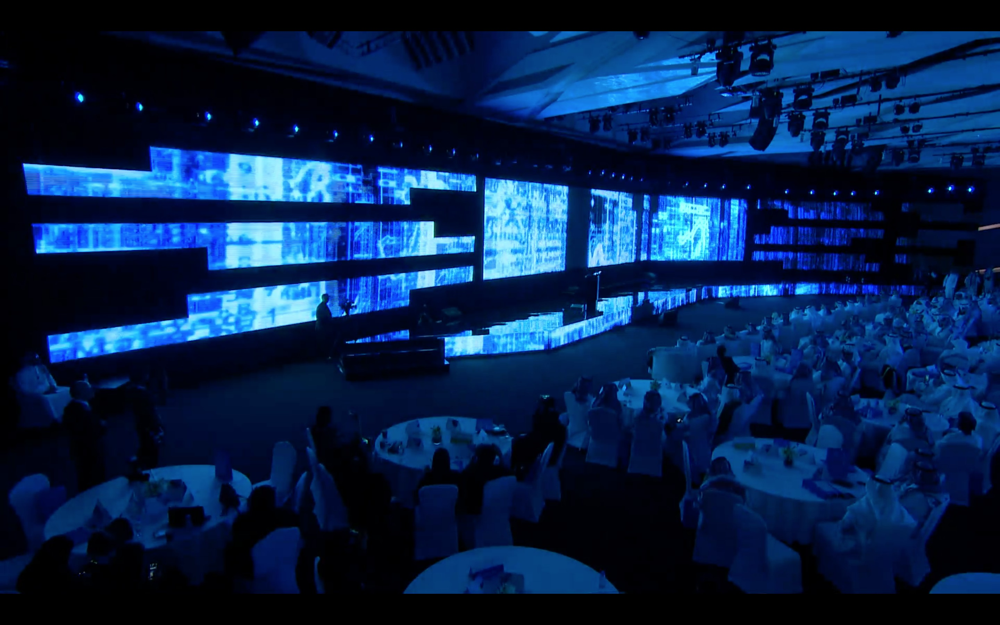
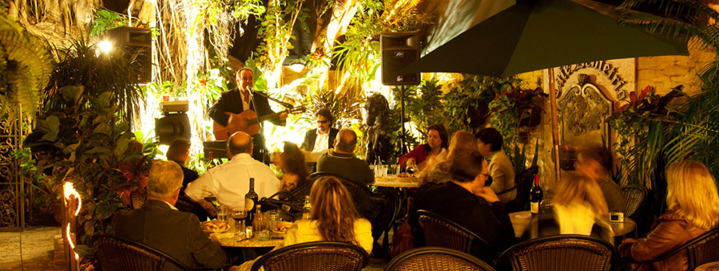

Chillin´eventos
De la mano de Chillin´ te traemos los próximos eventos donde podrás asistir y pasar un buen momento.

Coffee Night
Vení a degustar lo mejor del café y conocer las sorpresas que tenemos para vos.
Día y horario: 10 de Marzo 2022 - 21:00hs
Dirección: Cuyo 1590, Martínez, Provincia de Buenos Aires

Beer & Friends
Noche de cerveza de gran variedad, en conjunto con las mejores hamburguesas para todos los gustos.
Día y horario: 4 de Abril 2022 - 21:30hs
Dirección: Cuyo 1590, Martínez, Provincia de Buenos Aires

Show Night
Junto a un espectáculo secreto que tenemos para vos, te ofrecemos platos de gran calidad, bebida de variedad y pasar un momento inolvidable
Día y horario: 9 de Mayo 2022 - 22:00hs
Dirección: Cuyo 1590, Martínez, Provincia de Buenos Aires

Wine & Dine
Te invitamos a probar los mejores vinos y platos gourmet que tenemos para vos.
Día y horario: 6 de Junio 2022 - 21:30hs
Dirección: Cuyo 1590, Martínez, Provincia de Buenos Aires